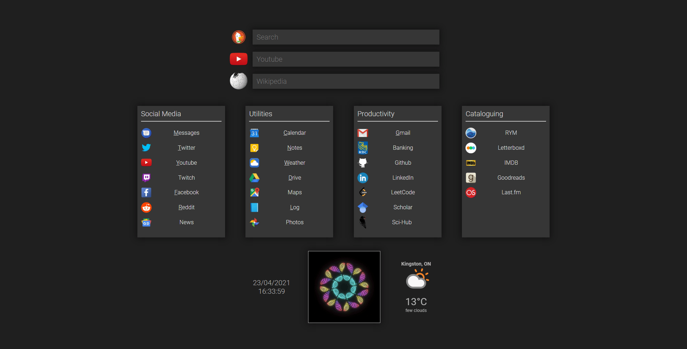
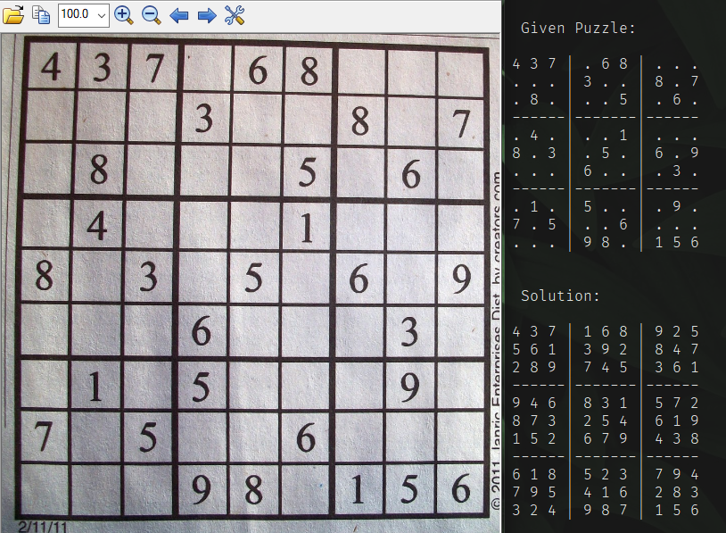

<!DOCTYPE html>
<html style="background-color: #efefef;">

</html>

<head>
    <meta charset="UTF-8">
    <title>Duncan Clarke - Projects</title>
    <link href="./style.css" type="text/css" rel="stylesheet" />
    <h1>Duncan Clarke</h1>
    <nav style="text-align: center; ">
        <a href="index.html" class="button1">HOME</a>
        <a href="cv.html" class="button1">CV</a>
        <a href="#" class="button1">PROJECTS</a>
    </nav>
    <br>
    <hr width="750px">
</head>

<h3 style="text-align:left; margin-left:100px;">Custom New Tab Page | 
<a href="https://github.com/duncansclarke/new-tab-page" style="color:#303030;">
GitHub
</a>

</h3>
<div style="display: flex; margin-left: 100px;">
    <a href="https://github.com/duncansclarke/new-tab-page">
        
    </a>
</div>
<br>
<br>

<div style="display:flex; margin-left: 100px;">
    <div class="speech top" style="text-align: left; max-width: 600px; padding: 5px; padding-right: 10px;">
        <ul>
            <li>Built using HTML, CSS, and JavaScript</li>
            <li>Contains links to all my most used websites</li>
            <li>Search functions for Duckduckgo, YouTube, and Wikipedia</li>
            <li>Displays the current time, date, and weather</li>
            <li>Includes a randomized flavor gif</li>
        </ul>
    </div>
</div>
<br>
<h3 style="text-align:left; margin-left:100px;">Computer Vision Sudoku Solver |
    <a href="https://github.com/duncansclarke/ML_Sudoku_Solver" style="color:#303030;">
        GitHub
    </a>
</h3>
<div style="display: flex; margin-left: 100px;">
    <a href="https://github.com/duncansclarke/ML_Sudoku_Solver">
        
    </a>
    
</div>
<br>
<br>
<div style="display: flex; margin-left: 100px;">
    <div class="speech top" style="text-align: left; max-width: 750px; padding: 5px; padding-right: 10px;">
        <ul>
            <li>Reads sudoku puzzle from photograph and solves resulting puzzle</li>
            <li>Built using Python, PyTorch, cv2, and the MNIST dataset</li>
            <li>Applies image preprocessing on the puzzle image with cv2 library</li>
            <li>Determintes empty cells and puzzle structure</li>
            <li>Constructs a neural network trained with MNIST dataset to interpret the digits</li>
            <li>Solves the interpreted puzzle using a simple backtracking algorithm</li>
        </ul>
    </div>
</div>

<br>
<br>

<h3>More projects are available on my GitHub
    <a href="https://github.com/duncansclarke" style="color:#303030;">
        here
    </a>

</h3>

<footer style='clear:both;'>
    <hr width="750px">
    <br>
    <a href="https://www.linkedin.com/in/duncan-clarke-a2b18b156/" style="padding-right: 10px"></a>
    <a href="https://github.com/duncansclarke"></a>
    <br>
    <p>Email: duncansclarke@gmail.com | Phone: 905-431-5515</p>
</footer>

</html>